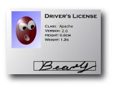
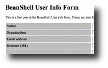

Free Software License
BeanShell Software License
BeanShell is a free software project. It's continued development depends on the interest and support of users and developers like you.
The source code is available for you to use and extend or integrate into your software freely under the Apache License v2.0.
An optional "cost" of this software is simply to let us know how you are using
BeanShell. You can do this by filling out the
BeanShell User Info Form.
Please feel free to wait until you have started using BeanShell to do this.
Previous Licensing: Sun Public License / Gnu Lesser Public License
Versions 2.04b and older are available under either the terms of the Sun Public License or the GNU Lesser Public License v2.1. These versions have some restrictions with respect to the more permissive Apache License used in newer versions.
Please see the Sun Public License and the GNU Lesser Public License version 2.1 for details.
Please also feel free to contact me: (Pat Niemeyer pat@pat.net) about other licensing arrangements.